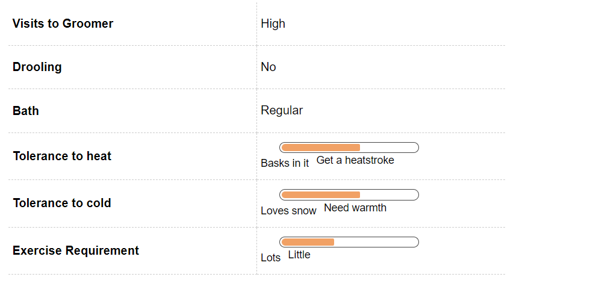
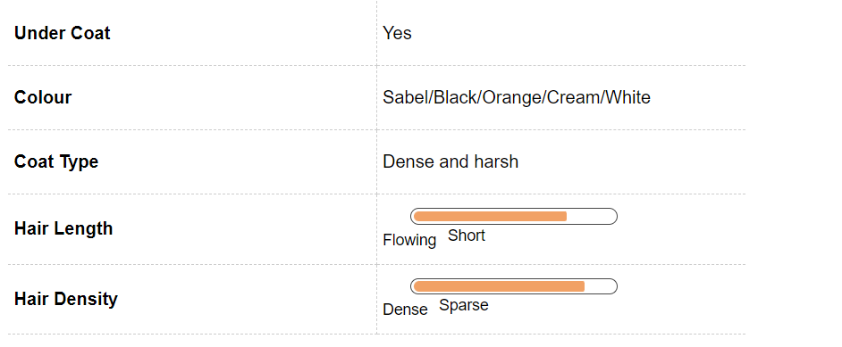
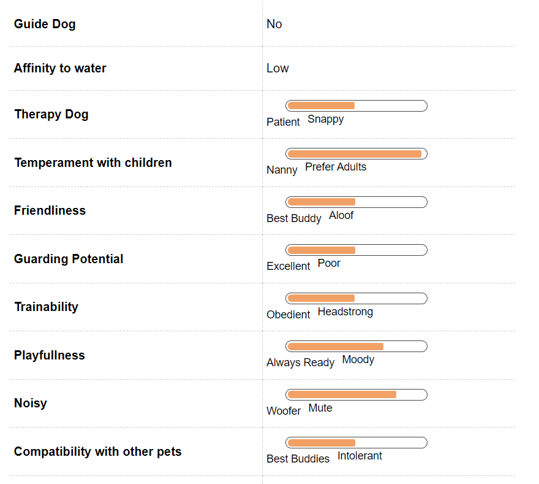
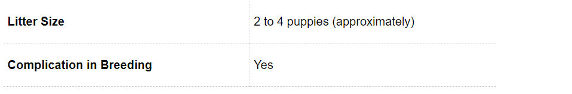
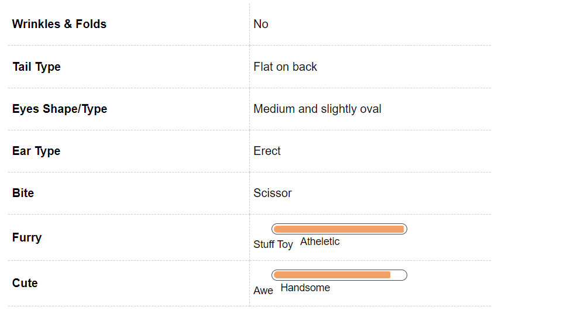

Pomeranian Dog Breed Information
Introduction
Poms are known the world over as perhaps the most popular toy breed. Their ancestors were much larger than them, as is evident from all the other Spitz breeds there are, which include the German Spitz, the Alaskan Malamute, the Samoyed and the Norwegian Elkhound. The breed gained popularity in the 17th century, thanks to Queen Victoria who fell in love with them and bred and raised several Pomeranians.
History
In 1761, the appeal of Pomeranians moved from the far northern European countries to England when Sophie Charlotte, a 17-year-old Princess of Mecklenburg-Strelitz – a neighboring province of Pomerania – married the English prince who later became King George III. Sophie Charlotte brought with her a pair of mostly white dogs named Phoebe and Mercury. At the time, the breed became popular among royalty, but was yet to become the common man’s dog. Two generations down, during the reign of Queen Victoria, the breed saw a huge increase in popularity. During her 64 years as the Queen of England, she bred several breeds of dogs, but she was especially fond of Pomeranians. Her most well known Pom was Marco, who weighed 12 pounds – far less from the average Pom of the time, who weighed about 20 pounds. Queen Victoria’s love for the small sized Pom inspired many English dog breeders to start breeding them and soon, Poms were the dog of choice amongst royalty and the common man alike.
Unique Aspects
The Pomeranian is loved because of its small and compact size. In spite of their instinct to believe they can take on any adversary, Poms are for the most part incapable of surviving on their own or outdoors. They are affectionate and warm with their humans, a characteristic that ensures they don’t often go without love and protection. Poms are best avoided when very small children are around, more so for the safety of the dog than the child. Poms can easily find their way between your feet and even get stepped on. Unsupervised play between Poms and kids is best avoided for this reason. Further, if there’s going to be no one at home for long periods of time during the day to look after your dog, then also this is not the right breed for you. Most of the toy breeds develop separation anxiety and can even turn destructive when left alone for long hours.
Fun Trivia

Pom(p) and show Pomeranians are adorable in general and it comes as no surprise that this breed has caught the fancy of various celebrities and famous people in history. Theologian Martin Luther had a Pom named Belferlein that he mentioned often in his writings. Michelangelo’s Pom is said to have sat on a satin pillow and watched him paint the ceiling of the Sistine Chapel. Sir Isaac Newton’s Pom, Diamond, reportedly chewed up many of his manuscripts and composer Mozart had a Pom named Pimperl to whom he dedicated an aria. In recent times, Keanu Reeves, Bill Cosby and Hillary Duff all allowed their hearts to be stolen by this pint sized beauty.
Vital Stats:
Dog Breed Group:
Toy Dogs
Height:
7 - 12 Inches
Weight:
2-4 Kg
Life Span:
14 to 15 years
Pros and Cons
| Pros |
Cons |
|
- Look like an adorable toys and lap up love - Fit into tiny apartments and big hearts just as easily - Excellent companions for older children and senior citizens
|
- Not the best guard dogs, although quick to bark - Known to be stubborn during training - High-maintenance in their desire for love and grooming
|
Pomeranian Maintenance & Effort

Grooming
As low maintenance as Poms are in general, grooming them isn’t the easiest thing in the world. If you’re not the sort who can spend a few hours a week brushing your Pom’s endless tufts of hair, then this isn’t the dog for you. That fluffy regal look comes with a price. The double coat of differently textured hair means they will need to be groomed at least twice a week. They are moderate seasonal shedders, but when they do shed, there’s plenty of hair everywhere! Males shed once a year, while females shed when in heat, soon after they’ve given birth to a litter and when they’re stressed out. During the summer months, it is best to crop the hair shorter, so that the dog is comfortable and not absorbing heat.
Pomeranian Hair & Coat

Pomeranian Health & Care
Common Health Issues
Pomeranians in general are a very healthy breed but as any other breed they are also prone to some common health conditions. It is not necessary that your adorable pooch will get this diseases he or she may will be free of diseases all its life. These are just some unfortunate incidents that you can encounter.
One of the common problems with Pomeranians is of allergies. Your dog can suffer from allergies from mere contact or can just have food allergies. The most common sign of an allergy will be when your dog starts to lick his paws or rubs its face a great deal.
This toy breed can be prone to variety of eye problems ranging from cataract to dry eye. They mostly occur in young adult Pomeranians but remember that it needs to be treated in time to ensure that there is no blindness in the later stages of life. Pomeranians can also develop hip dysplasia that is abnormal growth in the hip joint but unlike the larger breeds they can lead healthy and normal lives with it.
One of the common problems encountered by them is Patellar Luxation in this the knee joint slides in and out of place causing a lot a pain. They can also develop epilepsy, which is a cause of various seizures. At times this can be due to genetic reasons. Just remember to get your puppy from a good lineage.
Pomeranian Behavior

Temperament
Poms are smart, vivacious and outgoing dogs. They tend to love to meet new people, which is a great way to start socializing them when their still puppies, especially if you see signs of a cranky, moody Pom. They also suffer from Small-dog Syndrome, which means they believe they can take on adversaries several times larger than they are. Early socialization with other animals of all sizes and shapes is a great idea and will help minimize your Pom’s instinctive suspicion about strangers. Poms are excellent watchdogs in terms of being able to warn their humans about the presence of strangers, but make for poor guard dogs. This means their bark is worse than their bite, but watch out for incessant barking. If you don’t need a 24x7 watchdog, teach your Pom bark inhibition from an early age. This can be done by exposing the Pom to various sounds and smells from puppyhood. Poms are very intelligent and always eager to learn new things. Make sure you socialise them early, provide them with short and exciting bursts of training and you’ll have yourself a well-rounded, well-adjusted Pom.
Environment
Pomeranians are very adaptable and will be happy in an apartment as well as a house with a yard. Poms love company and don’t do very well as outdoor dogs, bereft of the company of humans. However small your house, ensure that your Pom gets frequent short walks and plenty of playtime. They’re very intelligent, so they get easily bored and destructive thereafter. If you have small kids, ensure that all play between them and the Pom is supervised. Young children can unintentionally harm this breed, because they’re just so tiny and delicate. Poms don’t do very well in either very hot or very cold climates, so make sure you keep them adequately warm in the winter and cool in the summer.
Training & Intelligence
Poms are high-energy lap dogs, which means they will switch between wanting to run around and engage in energetic play, and sit contentedly on your lap and watch you watch the telly. They are highly intelligent dogs and make for great watchdogs, but poor guard dogs. The high intelligence level of Poms makes them excellent at obedience training, although this will have to start at a young age. Poms enjoy short bursts of creative training, since they are quite stubborn and can get bored easily. Early socialization and bite inhibition can make your Pom well rounded and content. Poms are notoriously difficult to housebreak and their small bladders make it difficult for them to hold on for long hours. Crate training is recommended and a good canine behaviourist can help you with interesting and easy methods to train your Pom.
Pomeranian Breeding

Procreation
Poms seem to have a hard time when it comes to breeding, so if you’re a first timer in that department, it’s best to get the constant support of a vet. Small litter sizes and frequent requirement for C-sections makes this a difficult task. As in the case of all dogs, it is also important to have identified enough prospective pet parents for the puppies, so that they don’t end up on the street or in shelters. Although Poms attain sexual maturity anywhere between six to nine months of age, they are still too young to breed at this age. If you’re planning on having a litter, make sure you wait till your Pom is at least 2 years old. The average litter size is one to three puppies.
Puppies
Pomeranian puppies are like living dolls! They are cute, naughty and love the company of humans. Housebreaking will be the biggest hurdle you’ll have to cross, since Poms are not quick to learn this. Pom puppies also shed a lot till they’re six months old, since they will lose their puppy coat and grow a permanent one in this period. Regular grooming, early socialization and plenty of playtime will result in well-adjusted little Poms.
Pomeranian Appearance

Body
Poms are small dogs, standing 7-12 inches tall, on average. They weigh between 3 and 7 pounds (1-3kg). The most noticeable aspect of their appearance is the luscious coat and the feathery profusion of a tail. Poms come in a wide variety of colors, primarily red, orange, white or cream, blue, brown, or black. On the rare occasion, you might see a white Pom with colored markings, also known as a parti-coloured Pom, a black and tan Pom, or an orange and sable one. Poms are double coated with a topcoat of long, straight, shiny hair, which is rough to the touch and an undercoat that is soft, thick and fluffy. To retain the luscious texture of the coat and the tail, Poms will need to be brushed at least twice a week: not a task for the faint hearted. The chest is short, compact and deep rounded. The skull is fox-like: wide and flattish. The muzzle is wedge shaped. Their noses are either black or the same colour as their coat. The tail is turned over their back like in the case of all spitzes, and is completely covered in a profusion of luxurious hair. The eyes are medium shaped and beady with black rims. The ears are small, fox-like and pointed, again like all spitzes. The feet are small and compact and the legs are well boned and feathered.